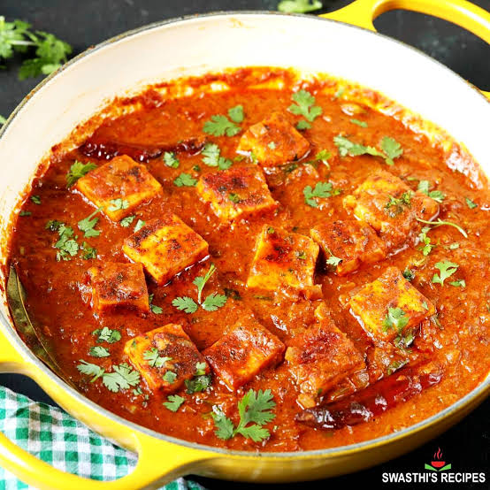
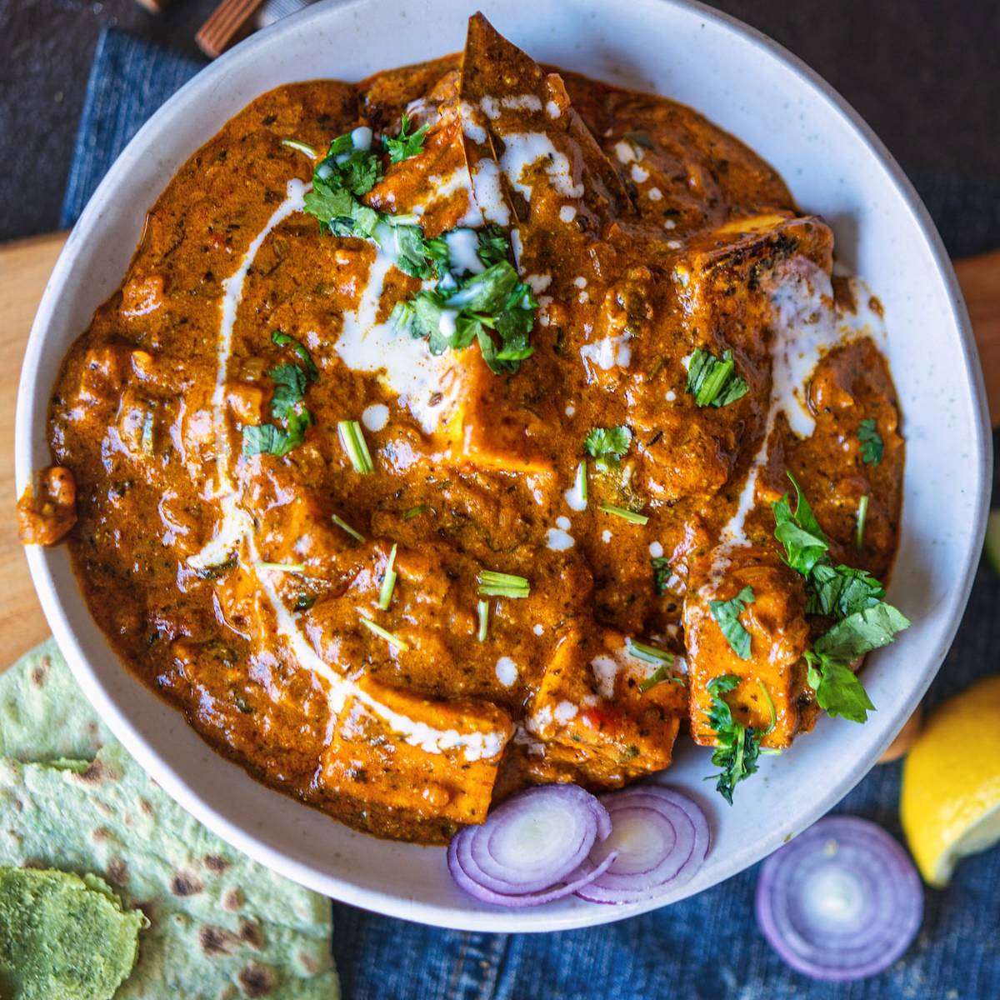

Paneer Masala Recipe
Home


Description
Paneer Masala is a popular North Indian curry featuring soft cubes of paneer (Indian cottage cheese) simmered in a rich, velvety, and well-spiced tomato-onion gravy. Perfect for pairing with fresh garlic naan, parotta, tandoori roti, or jeera rice, it is a vegetarian staple loved for its deep warmth and restaurant-quality aroma.
Paneer masala is a rich and creamy Indian curry made with soft paneer cubes in a spiced tomato, onion, and butter or yogurt gravy.
Ingredients
- Paneer: 200g to 250g, cut into cubes.
- Base:2 medium onions and 3 medium tomatoes (blended into purees).
- Creaminess:10 to 12 soaked cashew nuts (ground to a paste) or 2 tablespoons of fresh cream.
- Aromatics & Spices: 1 tablespoon ginger-garlic paste, 1 bay leaf, 1-inch cinnamon, 1 teaspoon Kashmiri red chili powder, ½ teaspoon garam masala, and 1 teaspoon kasuri methi (dry fenugreek leaves).
- Fats:2 tablespoons butter and 1 tablespoon oil.
Steps
- Make the pastes: Blend the soaked cashews into a smooth paste. Puree the tomatoes in a blender. Chop or grind the onions.
- Sauté aromatics: Heat oil and butter in a pan. Add the bay leaf, cinnamon, and onion paste. Sauté until golden brown.
- Add spices & tomatoes: Stir in the ginger-garlic paste, red chili powder, and tomato puree. Cook until the oil separates from the mixture.
- Thicken the gravy: Mix in the cashew paste and a splash of water to form a smooth, rich sauce. Add salt and garam masala.
- Add paneer:Gently drop in the paneer cubes. Simmer covered for 5 to 8 minutes on low heat.
- Garnish: Crush kasuri methi between your palms and sprinkle it on top along with fresh cream and coriander leaves.